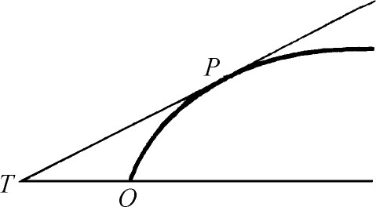
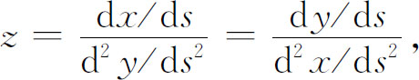

7．微积分的一些直接增补
微积分当然是数学中最庞大的部分的开端，这一部分一般叫做分析。我们将在以下几章里叙述这个领域中的重要发展，但是在这里，我们可以注意在牛顿和莱布尼茨的基础工作之后立即作出的一些补充。
在牛顿的《普遍的算术》（1707）中，他建立了多项式方程实根的上界定理。这个定理说：数a是f（x）＝0的实根的上界，如果用a代替x时，f（x）和它的所有的导数都给出相同的符号。
在他的《分析学》和《流数法》中，他给出一个一般的方法去逼近f（x）＝0的根，这个方法发表在1685年的沃利斯的《代数》里。拉夫森（Joseph Raphson，1648—1715）在小册子《普遍方程分析》（Analysis Aequationum Universalis，1690）中，改善了这个方法，虽然他只把这个方法应用到多项式，但它有更广泛的用处。这个修改后的方法现在叫做牛顿法或者牛顿-拉夫森法。它首先是选择一个近似值a。然后计算a-f（a）/f′（a）。记这数为b，再计算b-f（b）/f′（b）。把结果记为c，如此继续做下去，数a，b，c，…是根的逐次近似值（用的记号是现在的）。实际上，这个方法不一定给出根的越来越好的近似值。穆拉耶（J．Raymond Mourraille）在1768年证明，a必须选择得使y＝f（x）的曲线在a和根的区间内凸向x轴。很久以后，傅里叶（Joseph Fourier）也独立地发现了这一点。
罗尔（Michel Rolle，1652—1719）在他的《任意次方程的一个解法的证明》（Démonstration d'une méthode pour résoudre les égalitéz de tous les dégrez，1691）中给出了著名的现在以他的名字命名的定理，即如果函数在x的两个值，比如说a和b处等于0，那么在a和b之间的某个x值上，函数的导数等于0。罗尔叙述了定理但没有证明。
在牛顿和莱布尼茨之后，微积分的两个最重要的奠基者是伯努利兄弟，詹姆斯·伯努利［也叫雅各布（Jakob）或雅克（Jacques，1655—1705）］是自学数学的，因而在这门学科中成熟缓慢。在他父亲的敦促下，他为做一个牧师而进行学习，但最后转向了数学，并在1686年成为巴塞尔（Basel）大学的教授。从此以后，他的主要兴趣就是数学和天文学。在17世纪70年代末，当他开始研究数学问题时，他还不知道牛顿和莱布尼茨的工作。他也学习了笛卡儿的《几何》、沃利斯的《无穷的算术》以及巴罗的《几何讲义》。虽然他从巴罗那里学到很多，但他却把巴罗的结果表示为分析的形式。他逐渐地熟习了莱布尼茨的工作，但是因为后者的工作很少印出发表，所以使得詹姆斯·伯努利的许多结果和莱布尼茨重叠。实际上，他和当时的数学家一样，并没有充分理解莱布尼茨的工作。
詹姆斯·伯努利的活动和他的弟弟约翰·伯努利［或叫做Johann或让（Jean），1667—1748］的活动紧密地连接在一起。约翰·伯努利被他的父亲送去经商，但转向了医学，并从他哥哥那里学习数学。他成为荷兰格罗宁根（Groningen）的数学教授，后来继承他的哥哥成为巴塞尔的数学教授。
詹姆斯·伯努利和约翰·伯努利都经常地和莱布尼茨、惠更斯以及其他数学家通信，他们俩也互相通信。所有这些人都致力于信中提出的或者提出作为挑战的许多共同的问题。在这些日子里，因为结论也是在信中通知的，随后也没有发表，所以谁先发现是一个复杂的问题。有时把信誉归于那些虽已公开但当时还没有证明的结论。问题由于独特关系的出现而更加复杂化。约翰·伯努利非常急于成名而开始和他的哥哥竞争，很快两人在许多问题上互相挑战。约翰·伯努利毫不迟疑地用不正当手段把别人的包括他哥哥的成果作为自己的结果。詹姆斯·伯努利非常敏感，并且照样回击。他们各自发表文章，大部分互相取资，但不指明他们思想的来源。约翰·伯努利实际上成了他哥哥的尖刻的批评者，莱布尼茨想在两人之间进行调和。虽然在赞扬巴罗时，詹姆斯·伯努利早就说过，莱布尼茨的工作不应该贬低，但是他越来越怀疑莱布尼茨。另外，他忿恨莱布尼茨超等的洞察力，认为莱布尼茨态度傲慢，因为詹姆斯·伯努利认为起源于自己的事情，莱布尼茨声称他已经做了。他开始确信莱布尼茨蓄意要贬低他的工作，而且在他们兄弟间的争吵中偏袒约翰·伯努利。当法蒂奥·德·杜伊利埃（Nicholas Fatio de Duillier，1664—1753）赞扬牛顿创立了微积分而且卷入与莱布尼茨的争论时，詹姆斯·伯努利写信给法蒂奥反对莱布尼茨。
至于伯努利兄弟在微积分方面的工作，也是关于求曲线的曲率、法包线（曲线的法线的包络）、拐点、曲线的求长以及其他基本的微积分课题。牛顿和莱布尼茨的结论后来扩展到各种各样的螺线、悬链线和曳物线（它是这样一条曲线，其中PT和OT的比等于常数，图17.20）。詹姆斯·伯努利还写了五篇关于级数的文章（第20章第4节），文章把牛顿的级数的应用扩展到积分复杂的代数函数和超越函数。1691年詹姆斯·伯努利和约翰·伯努利给出曲线的曲率半径的公式。詹姆斯·伯努利称之为“黄金定理”并写作

图17.20
z＝dxds∶ddy＝dyds∶ddx，
其中z是曲率半径。如果我们用ds2除每一个比的分子和分母，就得到

这是更熟悉的形式。詹姆斯·伯努利也在极坐标中给出了这个结果。
约翰·伯努利作出一个现今著名的定理，它是用来求一个分数当分子和分母都趋于0时的极限的。这个定理由约翰·伯努利的学生洛必达（Guillaume F．A．L'Hospital，1661—1704）编入微积分的一本有影响的书《无穷小分析》（Analyse des infiniment petits，1696）中，现在通称为洛必达法则。